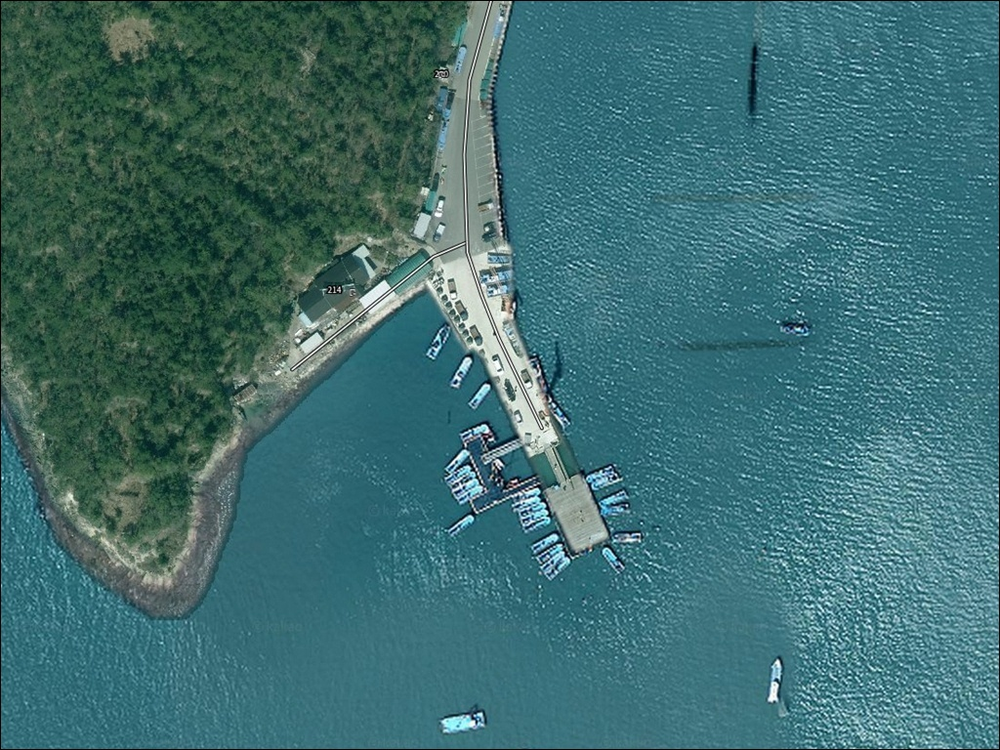
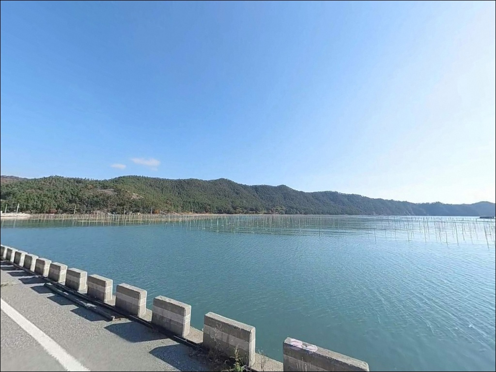
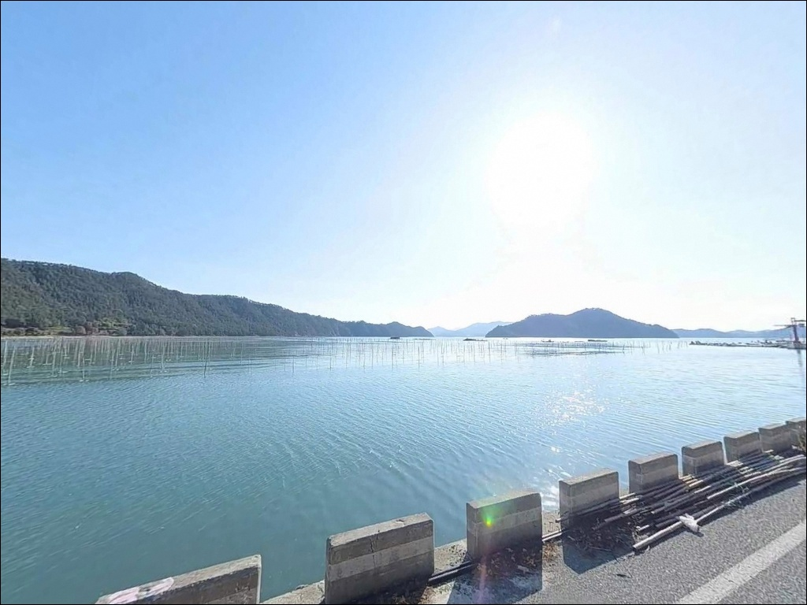
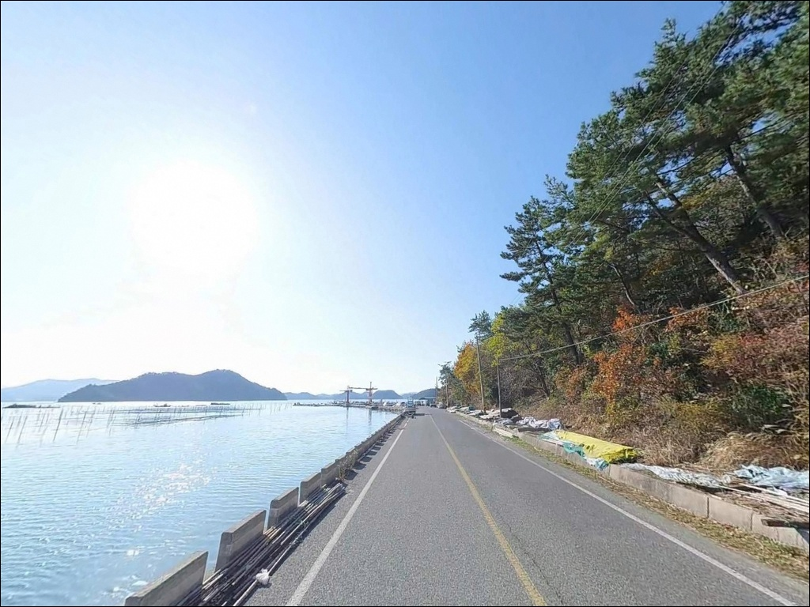
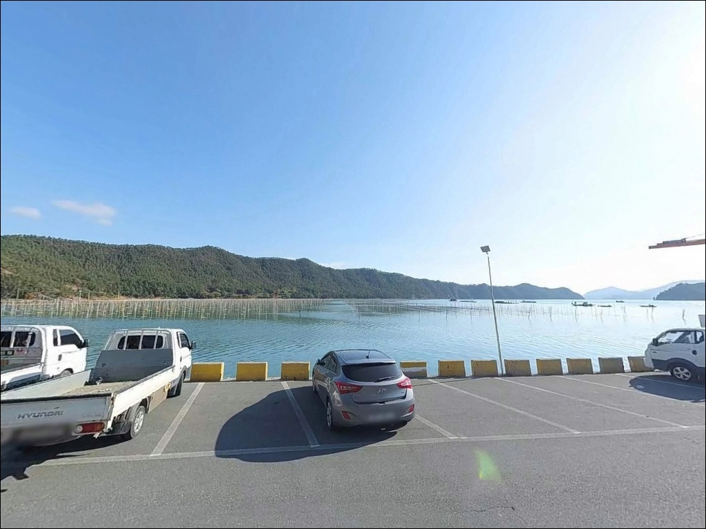
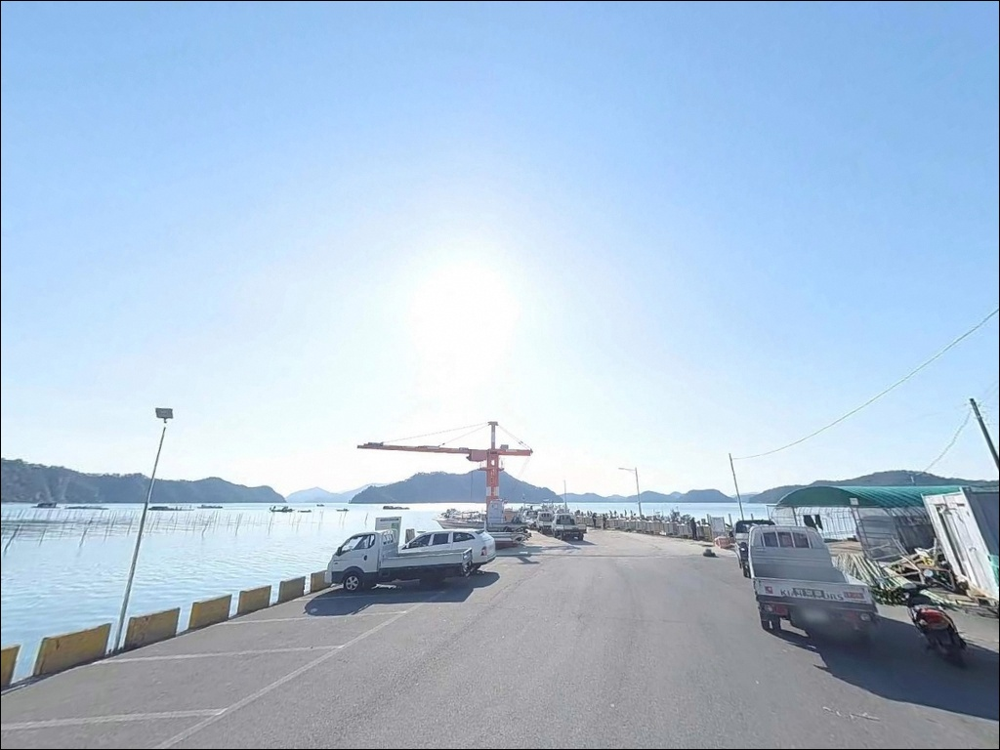
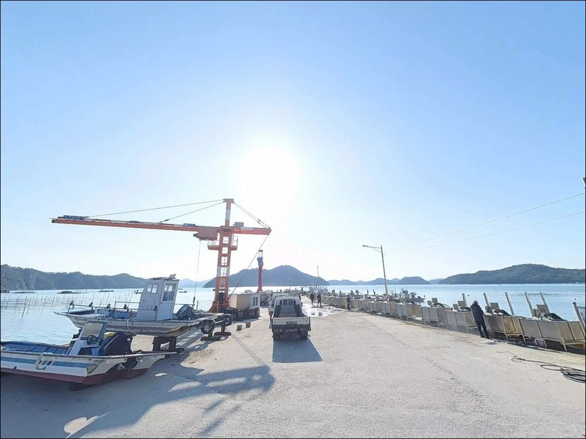
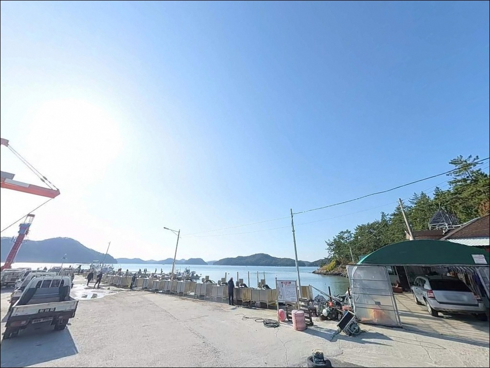
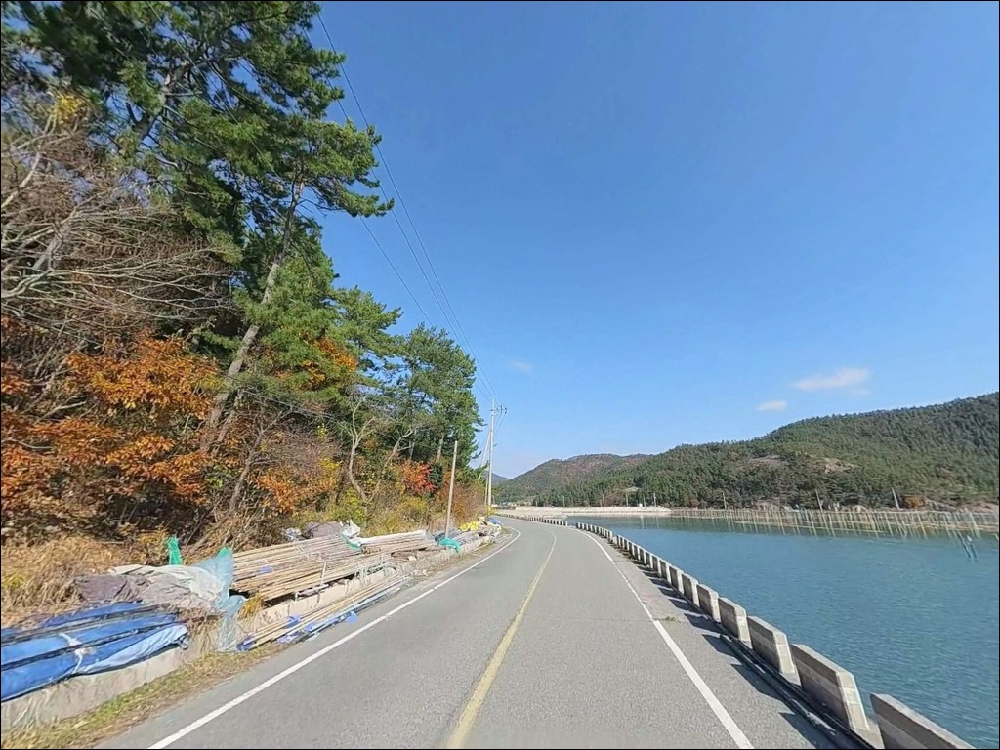

내저선착장, 전남 장흥군 조용한 바닷가 차박 낚시 명당
이 페이지에는 광고(제휴 링크 포함)가 있으며, 광고 링크를 통해 구매하면 운영자가 판매 수익 또는 수수료를 받을 수 있습니다. 포인트 사진: 카카오맵 스카이뷰·로드뷰. 이 페이지의 지도·사진 이미지는 카카오맵의 실제 서비스 이미지와 다를 수 있습니다.


포인트 안내
내저선착장
전남 장흥군 대덕읍 옹암리 370-1
내저선착장을 찾는 낚시인이 가장 많이 놓치는 판단은
방문 시기입니다.
12월부터 이듬해 2월까지 매생이 수확 작업이
집중되는 시기에는 선착장 일대가
어민 작업 공간으로 운용되어
낚시·차박 공간 확보가 크게 제한됩니다.
시기를 잘못 잡으면 진입 자체가 아깝습니다.
전남 장흥군 대덕읍 옹암리에 위치한 내저선착장은
득량만 내만 쪽으로 깊숙이 들어온
소형 어항 구조입니다.
일자형 선착장과 방파제가 결합된 형태로,
외해 노출이 없어 파도 영향이 거의 없고
전국적으로 유명한 매생이 생산지인
내저마을과 맞닿아 있는 포인트입니다.
이 글은 내저선착장의
진입 동선과 주차 여건, 차박 환경,
낚시 방식별 지형 조건을 중심으로 정리합니다.
조황 단정이나 특정 어종 보장은
이 글의 범위에 포함되지 않습니다.

1. 진입 동선과 포인트 접근성
대덕읍 소재지에서 내저마을 방향으로 진입하는
도로는 2차선 아스팔트 포장도로로
접근성이 안정적입니다.
마을 내부로 들어서면 도로 폭이 다소 좁아지지만
승용차와 일반 캠핑카 수준의 차량은
통행에 지장이 없는 구조입니다.
선착장 입구에는 넓은 공터가 형성되어 있어
대형 차량도 원활하게 회차가 가능합니다.
주차는 선착장 시작 지점과 측면 공간에
약 15대 내외가 정차 가능한
노면 공간이 확보되어 있습니다.
단, 어선 계류 동선을 막지 않는 자리 선정이 기본입니다.
초행이라면 위성지도로 마을 내부 진입로 구조를
미리 확인해 두는 편이 좋습니다.
어선 출입 차량이 수시로 드나드는 현역 어항이므로
좁은 구간에서 교행 상황이 생길 수 있습니다.

2. 차박 환경과 야간 체류 여건
내저선착장은 어촌 마을 안쪽 포구 구조로,
완전한 고립형 환경은 아닙니다.
선착장을 따라 가로등이 설치되어 있어
야간 낚시와 차박 시 기본적인 시야 확보가 됩니다.
야간 차량 통행은 거의 없는 편이지만
민가와의 거리가 가까운 구조라
소음에 각별한 주의가 필요합니다.
차박 프라이버시는 '완전 고립형'이 아니라
'마을형 조용 포인트' 수준으로 이해하는 것이 맞습니다.
낚시를 마치고 조용히 머무는 용도로는 나쁘지 않으며,
주차 공간이 넓은 편이라
차량 배치에 있어서는 선택지가 있는 포인트입니다.
12월부터 2월 사이 매생이 수확 시즌에는
어민들의 작업 활동이 이른 새벽부터 시작됩니다.
이 시기 차박은 어민 작업 공간과 충돌할 수 있으므로
작업 시즌을 피한 방문이 현실적입니다.


3. 주변 편의시설 및 인프라 현황
내저선착장 인근에는
공중화장실이 운영되고 있어
낚시·차박 시 기본 위생 인프라가 갖춰진 포인트입니다.
마을 내에도 소규모 매점과 식당이 위치해 있어
단시간 생필품 조달이 가능한 환경입니다.
대덕읍 소재지는 내저선착장에서
차량으로 약 5분 거리입니다.
대덕농협 하나로마트와 GS25, CU 편의점,
의원, 약국 등 생활 인프라가 집중되어 있어
식수·얼음·낚시 소품 보충이 수월합니다.
서남해안 소규모 포인트 중에서
보급 여건이 좋은 편에 속하는 포인트입니다.
응급 상황 발생 시에도 읍내 의원을
빠르게 이용할 수 있는 위치입니다.
장거리 이동 없이 보급과 귀환이 동시에 해결되는
접근성은 이 포인트의 실질적인 장점 중 하나입니다.

4. 방문 전 반드시 챙겨야 할 준비사항
내저선착장 방문에서 가장 먼저 결정해야 할 것은
방문 시기입니다.
매생이 수확 작업이 집중되는
12월부터 이듬해 2월까지는
선착장 일대 작업 활동이 빈번해
낚시 및 차박 공간 확보가 어려운 시기입니다.
3월 이후부터 11월까지가 방문 적기입니다.
에깅을 주목적으로 방문한다면
9월에서 11월 사이가 갑오징어와 주꾸미
반응이 살아나는 시기입니다.
출조 전에는 반드시 득량만 조황과 장흥 대덕읍 낚시
키워드로 최신 정보를 검색해 확인하는 것이 좋습니다.
선착장 안벽에 난간이 없는 구간이 있으므로
야간 이동 시 발밑을 반드시 확인해야 합니다.
만조 시 물이 차오르는 높이도 미리 파악해 두는 편이 안전하며,
구명조끼와 헤드랜턴은 기본 필수 장비입니다.
어구와 그물, 매생이 틀 위에 주차하거나
채비를 올리는 행위는 엄격히 금해야 합니다.

5. 지형 기반 낚시 여건 분석
내저선착장의 지형적 핵심은
득량만 내만 깊숙이 위치한다는 점입니다.
외해 직격 노출이 없는 구조라
파도 영향이 거의 없고 수면이 잔잔하게 유지됩니다.
수심은 선착장 끝단 기준 약 4~6m이며,
바닥은 펄과 모래가 혼합된 저질입니다.
수심 구조는 완만하게 깊어지는 경사형으로,
선착장 끝단에서 정면 방향으로
50m 이상 원투하면 수심이
확보되는 구간에 도달합니다.
인근에 매생이 양식장이 넓게 분포해
조류 흐름이 완만하고 채비가 안정적으로 앉는
구조입니다.
조류는 사리 전후보다 조금 전후에
낚시 여건이 더 안정적입니다.
물때를 맞추면 채비 컨트롤이 수월해지고
바닥층 탐색에 집중할 수 있습니다.
득량만 일대는 감성돔 치어 방류가
수년간 지속된 해역으로,
이 지형에서 기대해 볼 수 있는 어종으로
도다리·보리멸·붕장어·감성돔·갑오징어가 있습니다.
출조 전에 최신 조황은 꼭 검색해 보시기 바랍니다.


6. 득량만 내만에서 선택하는 낚시 방식
이 포인트에서 가장 안정적으로 성립하는 방식은
원투낚시입니다.
펄·모래 혼합 저질에 갯지렁이 미끼를 달아
선착장 끝단에서 정면 방향으로 장타를 치는 방식으로,
도다리·보리멸·붕장어를
주 타겟으로 삼는 운용이 이 지형에 잘 맞습니다.
에깅은 9월부터 11월 사이에 집중할 만합니다.
선착장 석축 주변과 양식장 경계면 구간에서
갑오징어와 주꾸미 반응이 나오는 시기입니다.
에깅이란 갑오징어·주꾸미를 대상으로
에기(인조 미끼)를 사용하는 루어낚시 방식으로,
내만의 잔잔한 수면 조건에서도
충분히 운용이 가능한 스타일입니다.
야간에는 가로등 주변을 노리는 라이트게임도
병행해 볼 만합니다.
집어되는 풀치(갈치 치어)와 볼락을
가벼운 지그헤드 채비로 공략하는 방식으로,
원투 대기 중 빈 시간을 활용하기 좋습니다.
찌낚시도 선착장 측면 또는 끝단에서 운용 가능하며,
바닥층 위주 반유동 채비가 이 지형에 어울립니다.

7. 대안 포인트와 플랜 B 동선
내저선착장 여건이 여의치 않거나
더 다양한 낚시 여건을 원한다면
신미항이 첫 번째 대안입니다.
내저선착장에서 남쪽으로 내려가면 위치하는 항구로,
수심이 더 깊고 외항 낚시 여건이
다양하게 갖춰진 대체 포인트입니다.
데크형 시설에서 낚시를 원한다면
차량으로 약 10km 거리에
정남진 해양낚시공원이 있습니다.
감성돔 서식지로 알려진 득량만 남쪽 해역에
자리한 시설형 낚시터로,
수~일요일에 운영하며 월·화요일은 휴장입니다.
방문 전 운영 일정을 사전에 확인하는 것이 좋습니다.
인근 해안선 상의 옹암리 방파제는
현장 상황에 따라 더 한적한 공간이 필요할 때
대안 차박 후보로 탐색해 볼 만한 위치입니다.
대덕읍 인근 해안선을 따라
소형 선착장들이 산재해 있어
동선을 유연하게 운용할 수 있습니다.

득량만 내만의 조용한 포인트,
시기를 알고 가면 달라집니다
갑오징어 에깅이나 원투낚시를 즐기는
낚시인이라면 내저선착장의 지형 조건은
잘 맞는 구조입니다.
잔잔한 내만 수면과 펄·모래 저질,
가로등이 갖춰진 선착장 환경은
편하게 자리를 잡고 운용하기에 무리가 없습니다.
대덕읍 소재지와 가까워
보급 부담도 적은 포인트입니다.
반면 12월에서 2월 사이 매생이 작업철에
시기를 맞추지 못하고 방문한다면
낚시와 차박 모두 여의치 않은 상황을
맞닥뜨릴 수 있습니다.
방문 시기 확인, 매생이 작업철 회피,
어민 작업 동선 존중,
이 세 가지를 갖추고 간다면
조용하고 실용적인 출조가 되는 포인트입니다.
읍내에서 필요한 것을 채우고
득량만 내만을 바라보며 채비를 드리우는
조용한 하루 차박 낚시를 원하는
낚시인에게 잘 맞는 곳입니다.